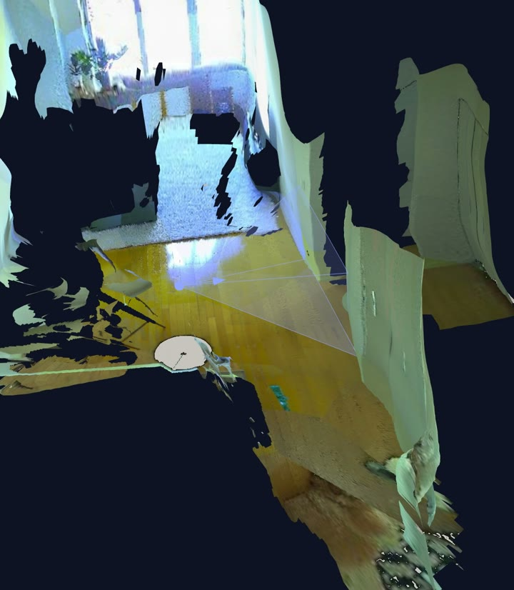
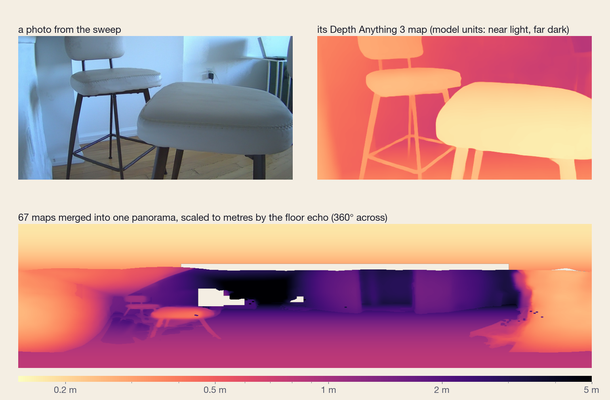
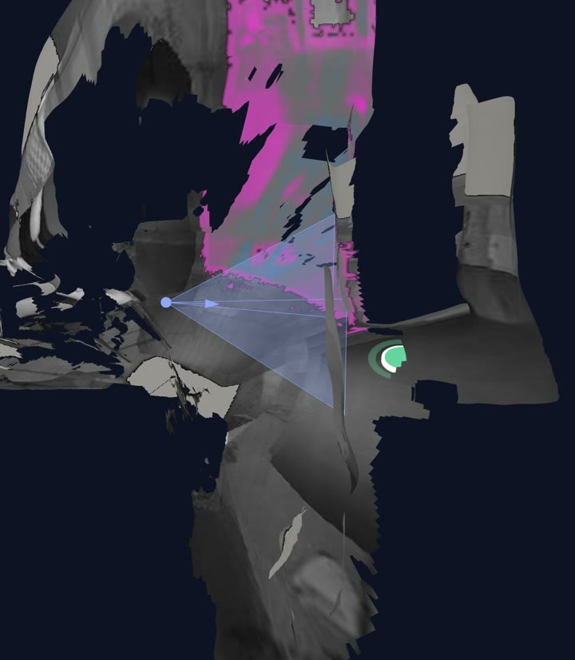
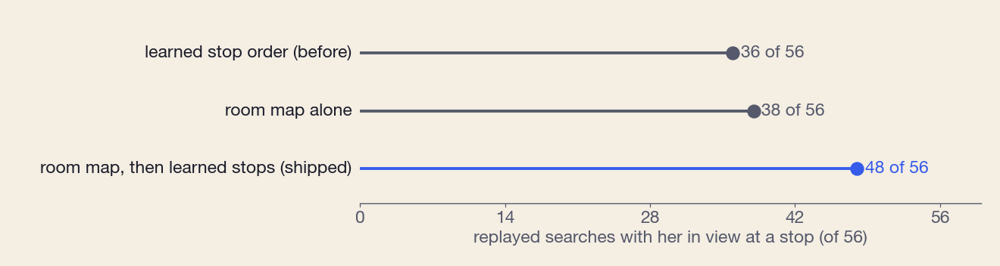

· 6 minute read
Teaching a $12 pet camera where to look
I wanted the camera to remember the room after the dog had left the picture.
When my dog walks out of view, OpenPetCam starts looking for her. In the search logs, it also spends a surprising amount of time looking at the underside of the kitchen counter. The detector gets a perfectly good picture of cabinetry and has nothing useful to say about it.

Of 1,268 settled search frames, 304 showed almost no floor according to the room model. About a quarter of the looks went to cabinet, counter or wall. The sofa and rug seemed like better places to start.
A useful map would tell the search which motor positions showed those places, how much the views overlapped, and where the dog had been earlier in the day. The awkward part was getting distances from a camera that could barely change its point of view.
Watch the one-minute walkthrough
One place to look from
The head can turn almost all the way around, but the camera stays on its mount. The lens does shift a little as it turns; I have not calibrated that motion well enough to use it for stereo. I treated the pictures as a sweep from approximately one viewpoint.
Overlapping photographs can still tell you a lot. Match the same corner in several pictures and you can work out the lens distortion and how far each motor step turns the image. Across a sweep of 67 views, the median matching error was about three pixels. That let me stitch the pictures together and attach a direction to each pixel.
I could point to the sofa on the panorama; putting it on a floor plan would require a distance.
An approximate ruler
The camera has a speaker and a microphone, so I tried a frequency sweep. Deconvolving the recording compresses that long sound into a short response, with peaks at different delays. Some belong to the room. The speaker, microphone, housing and recording chain contribute their own response too.
I used a recurring peak near 4.7 milliseconds as a candidate floor return. With the timing and path assumptions in that first build, it put the floor roughly 0.8 metres below the lens. That gave the model a scale to work with.
The saved value is 0.807 m, which looks more authoritative than it deserves. I have not independently checked the arrival used as the timing reference or measured the height with a tape. For now, the room inherits an approximate ruler.
Moving the sofa in software
Depth Anything 3 supplied an estimate of shape from the photographs. The pipeline merges its overlapping depth maps, smooths their seams and scales the result using the floor estimate. Wall edges marked on the panorama and simple furniture shapes help organize the rough surface.

In one version, the depth model put the sofa about 1.5 metres from the camera. Placing it from the line where it met the floor moved it to about 3 metres. Both constructions used the same assumed camera height. Changing the placement method had moved the front of the sofa by more than a metre.
The dog gives me another way to question the surface. Where she stands, her feet should meet the floor. Across 2,255 detected foot directions, the merged depth disagreed with the assumed floor by a median 4.7%, compared with 5.2% for a simple merge. That is a useful consistency check, although it still shares the scale assumption and the detector's imperfect estimate of her feet.
The wall distances have no equivalent independent check yet. You can orbit the model and recognize the room, but that familiar appearance leaves quite a lot unresolved.
Scrambling the labels
The sound recordings changed when the head turned. I tried a ray model to explain those changes: given a pose and the room geometry, predict the echoes that ought to reach the microphone.
The fit scored 0.397. I then scrambled which head pose went with which recording and fitted it again. The scrambled labels scored 0.402. Whatever the model had picked up, I had no evidence that it knew which way the camera was pointing.
A more detailed wave simulation did not establish a reliable reconstruction either. An idealized propagation test says little about whether I have drawn the real housing and nearby counter correctly.
Later recordings brought the problem closer to the instrument. Four shots in one capture can repeat extremely well, while separate captures at the same pose shift by as much as about 1.8 milliseconds. I need to understand that shift before combining recordings into a coherent acoustic survey. The responses vary with pose; explaining that variation is still unfinished work.
Keeping the observations
Once there is a place to store an observation, the map can accumulate a day. Each small surface patch holds its colour and the way its light changes over time. Logged dog detections leave a history on the floor. In the viewer, a time slider lets me move through those records.
The heatmap has the camera's habits mixed into it. A corner that is rarely watched tells me little about how often the dog uses it. Even so, the places where she has repeatedly been seen are worth visiting when she disappears again.

The infrared LEDs add another layer. Comparing frames with the light on and off helps isolate the camera's illumination; comparing that with visible light makes some plants, fabrics and fur stand out. Exposure and surface angle still complicate the comparison. I kept it in the viewer as something to inspect, without assigning material identities to the colours.
A better first few places
I replayed the recorded searches with a different stop order. The map for each searched day was built from the other days, so it could not learn that day's answer from the same observations.

The old order reached a view containing her in 36 of 56 searches. The room map alone reached 38. Using the map first, then trying the remaining learned stops, reached 48. Of the 26 searches both the old and combined orders reached, the combined order was earlier in 19, by a median of 4.6 seconds.
These are replayed sightlines, and a dog in the picture can still escape the detector. The estimated dog position and the visibility calculation also share the room model. Recorded searches favour places the old order already visited. New live searches will have to tell me how much of the gain survives.
Keeping the old stops meant the search could fall back on places the map had failed to cover.
One measured wall
The map already gives the search a few better places to look. I would like to ask more of it, especially when a bark comes from outside the picture. Before I trust its answer, I want to know that it has put one wall in the right place.